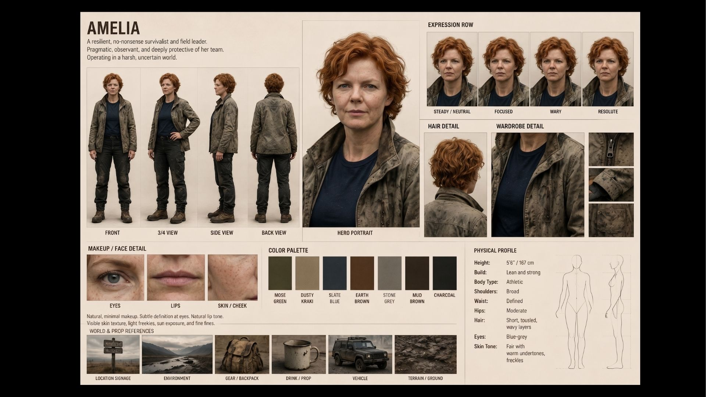
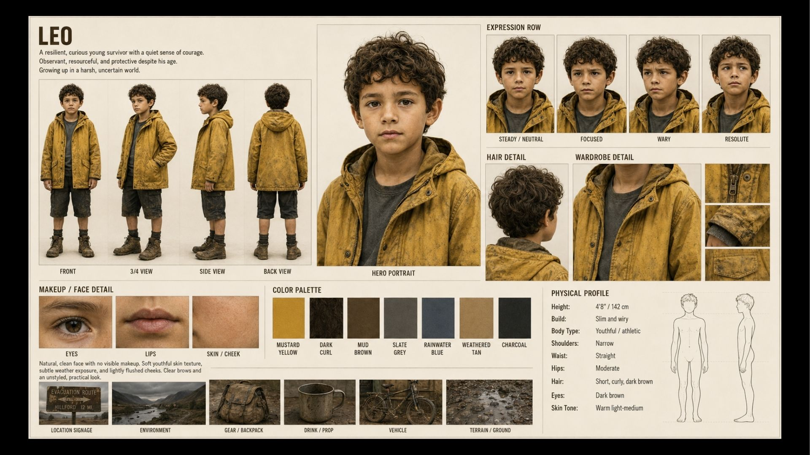
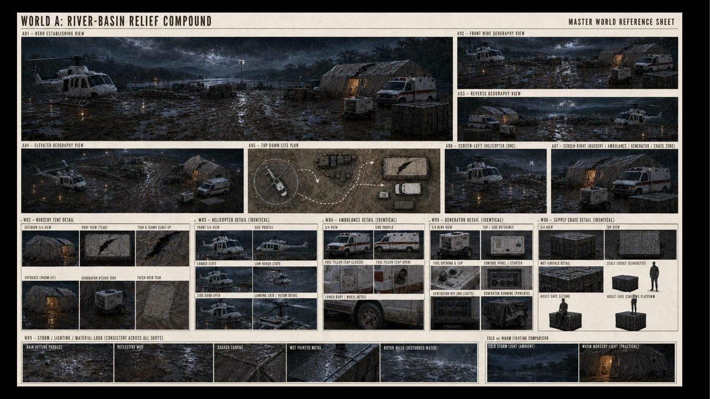
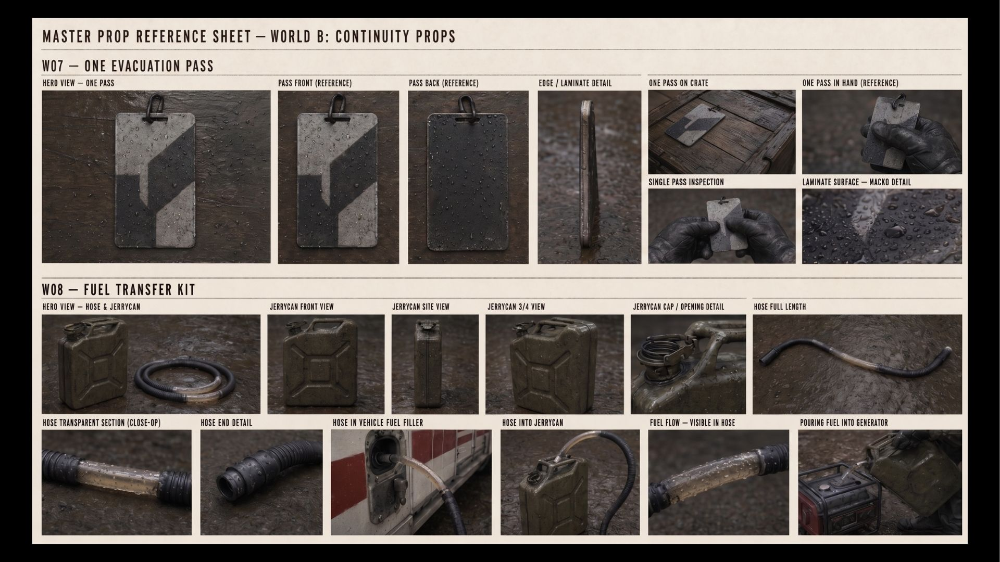
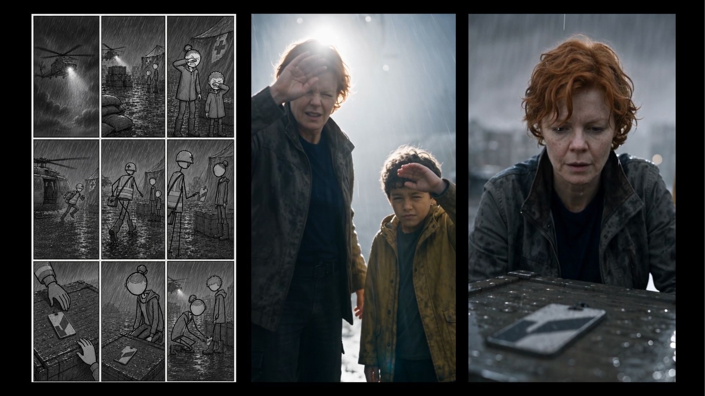

Define
Write each dimension as a question a rater can answer by pointing at the output. Set the rating scale and the rules for what counts.
AI Video Evaluation · Storytelling, Editing and Visual Quality
I review AI-generated video with 15+ years of editing, directing and showrunning behind the judgement, and write up what fails—storytelling, transitions, visual consistency, pacing, audio-visual sync—as structured feedback.
Selected evaluation work · Singapore · 2024–2026
The evaluation loop
The studies below cover completed tests and evaluation designs. Confirming reference labels and calibrating automated judges are next steps.
Write each dimension as a question a rater can answer by pointing at the output. Set the rating scale and the rules for what counts.
Score side by side or absolutely, on controlled prompts and first-generation outputs. Check prompt adherence separately from quality.
Name the failure mode, say whether the prompt or the model caused it, and state the limits of the test.
Planned: confirm the candidate reference labels, then compare automated judges with human ratings.
Selected evaluation work
One is a completed text-to-video rubric study; one is an evaluation design in progress. Four cover tests on my own generative video projects. Each states its question, method, findings and limits.
I set the standard and was the sole human rater. AI tools assisted with record analysis and draft labels, as noted in each study.
A six-dimension Yes/No rubric applied to first-generation outputs from three text-to-video models, during a nine-month generative-AI research contract at a Singapore government agency. The three models are widely used commercial products, shown here as Model A, B and C.
| Dimension | Question the rater answers | Model A | Model B | Model C |
|---|---|---|---|---|
| Visual realism and quality | Does the video appear photorealistic with natural lighting and textures? | 3 | 3 | 3 |
| Motion coherence | Does movement appear natural and follow realistic physics? | 0 | 2 | 1 |
| Temporal consistency | Does the video maintain smooth continuity without flickering or warping? | 3 | 3 | 3 |
| Creative originality | Does the video show creative interpretation rather than generic, template-like output? | 0 | 3 | 1 |
| Prompt adherence | Does the video accurately represent the requested prompt without major hallucinations? | 1 | 2 | 3 |
| Shot success | Is this video immediately usable without requiring regeneration? | 0 | 2 | 0 |
| Total | Out of 18 | 7 | 15 | 11 |
An evaluation design for my short-form AI video series: a completed record audit and script-judge comparison, a failure taxonomy, draft rubric lines and a candidate golden set. Reference-label confirmation and video-judge calibration are pending.
| Class | Examples from the records | Proposed checker, subject to validation |
|---|---|---|
| A · Tool failure | Too many reference images in one request; a prompt lost before sending; a parallel run copying the wrong file as its output. | Code, before the call |
| B · Brief fault | Two routers where the brief specifies one; three glass bays against four; a straw in a cup that must be sealed. | A model, from the image and the brief |
| C · Performance fault | The character looks at the camera when the script says the treadmill belt; sleepy where the script says dizzy; a wave where a point was asked. | A model, with care |
| D · Identity and continuity | Wardrobe lost between image and video; the character too large against an adult; the character on the wrong side of frame. | A model plus measurement |
| E · Taste | “Face too polished”; “too similar to the previous episode”. | The human reviewer |
Which reference methods keep three characters, their world and its props consistent across a sequence of generated shots, and which failures belong to the inputs, not the model? Tested on an AI-assisted microdrama pipeline that turns one portrait into a short fictional story.





A side-by-side evaluation of three video models on sustained acting performance, run on a behavioural-analysis YouTube channel that dramatises everyday psychological manipulation through a surveillance-camera aesthetic.
A two-model comparison on whether one synthetic talking character stays recognisable across vlogs and short-form video. The failure audit and golden set built on this series are study 02.
An image-to-video evaluation on archive artwork: does animation preserve what the source image shows? Run on a semi-autonomous production workflow for 1–2-hour ambient historical-music videos.
Findings and design decisions
The script study showed weak agreement on taste. The draft video rubric therefore asks observable questions; judge reliability on those checks still needs validation.
The rubric study and Youniverse both recorded which failures came from the prompt, reference or storyboard and which survived a correct input.
DeadTell, JJ and Terra measured generations per usable shot, first-pass usability and cost, and kept representation and accuracy checks with a human.
DeadTell's image model cast synthetic people from narrow racial defaults; Terra's colourisation whitewashed people in historical artwork. Both were logged as model failures, mitigated in the prompt—a demographic randomiser, era-aware skin-tone instructions—and kept under human accuracy review.
Define the dimension. Score the output. State the limit.